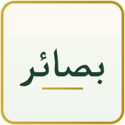

بِسْمِ اللَّهِ الرَّحْمَٰنِ الرَّحِيمِ
۞ ❈ ۞
Ўзбекча
العربية
Аллоҳнинг гўзал исмлари
Қуръони Карим — Ўзбекча таржима
Имом Бухорий — Саҳиҳ тўплами
Имом Нававий — Қирқ ҳадис
Зикр ва дуолар тўплами
Шубҳалар пардаси ортидаги ҳақиқат
Отамга – Қуръон тиловати учун ёрдамчи

بصائر — أكبر مشروع فكري في نقد الإلحاد وبيان بعض أدلة صحة الإسلام
۞ ❈ ۞